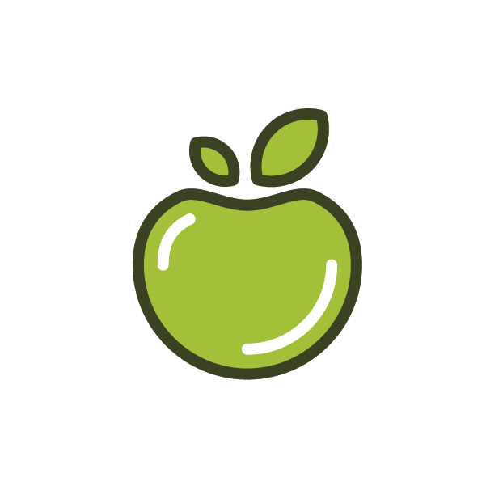

Cereixas
Froito da cerdeira, de forma arredondada, con carabuña, aproximadamente de dous centímetros de diámetro e de cor vermella, que está unido á árbore por un rabo delgado e longo.

Laranxa
Froito da laranxeira de forma arredondada e de cor entre amarela e encarnada.
Limón
Froito do limoeiro, de forma ovada, coa tona marela e de sabor agre.

Mazá
Froito da maceira comestible de carne branca e pel fina de cor verde amarela ou vermella segundo as variedades.

Pera
Froito comestible da pereira, de tamaño e forma variable segundo a caste.

Sandía
Froito desta planta, redondo e de gran tamaño, que ten a casca verde e a polpa encarnada, de sabor doce, con moito zume e pebidas negras.